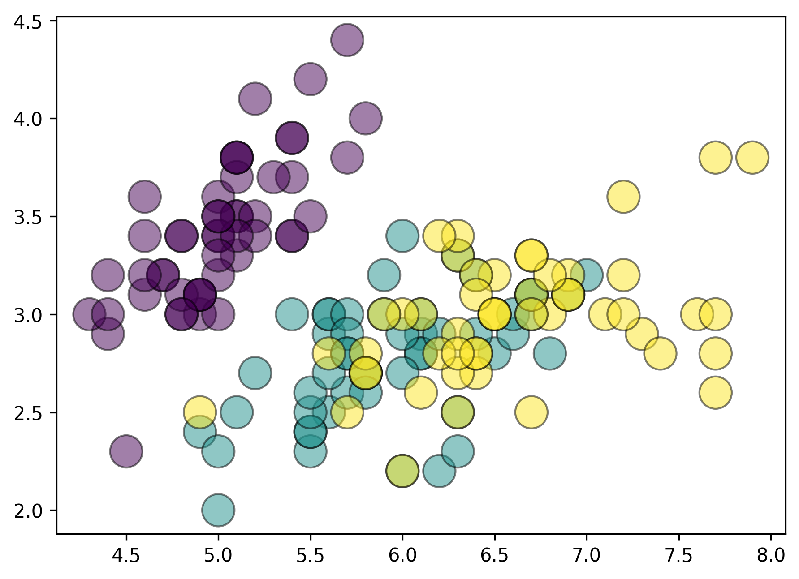

Turn static matplotlib charts into interactive web visualizations

plotjs is a Python package that transform matplotlib plots into
interactive charts with minimum user inputs. You can:
- control tooltip labels and grouping
- add CSS
- add JavaScript
- and many more
Warning
plotjs is in very early stage: expect regular breaking changes.
Get started
Matplotlib is great1: you can draw anything with it.
But Matplotlib's graphics are static2, unlike those of plotly or altair, for example.
For instance, a chart made with matplotlib looks like this:
import matplotlib.pyplot as plt
from plotjs import data
df = data.load_iris()
fig, ax = plt.subplots()
ax.scatter(
df["sepal_length"],
df["sepal_width"],
c=df["species"].astype("category").cat.codes,
s=300,
alpha=0.5,
ec="black",
)

This is just a png file, nothing crazy.
Wouldn't it be cool if we could, for example, have hover effects? Like, if I put my mouse on a point, it displays something?
from plotjs import PlotJS
# fmt: off
(
PlotJS(fig=fig) # create a PlotJS instance
.add_tooltip(labels=df["species"]) # add a tooltip (specie name)
.save("iframes/quickstart.html") # save to an HTML file
)
plotjs convert any matplotlib Figure to an HTML file that contains an
interactive version of your plot. By default, it will highlight the
hovered point and fade other points.
What if we want to highlight all points from a specie for example?
from plotjs import PlotJS
(
PlotJS(fig=fig)
.add_tooltip(
labels=df["species"],
groups=df["species"],
)
.save("iframes/quickstart2.html")
)
CSS
Now, let's say we want to a finer control over the hover effects.
That's easily possible with some basic CSS:
- we select
.hoveredto control CSS for the hovered points - we select
.not-hoveredto control CSS for the un-hovered points
from plotjs import PlotJS
(
PlotJS(fig=fig)
.add_tooltip(
labels=df["species"],
groups=df["species"],
)
.add_css(".hovered{fill: blue !important;}")
.save("iframes/quickstart3.html")
)
Learn more about CSS customization
Label customization
Now let's setup better labels than the current ones.
The tooltip argument just requires an iterable, and will use this for
the labels. That means we can do pretty much whatever we want. For
instance, with pandas, we can do:
custom_tooltip = df.apply(
lambda row: f"Sepal length = {row['sepal_length']}<br>"
f"Sepal width = {row['sepal_width']}<br>"
f"{row['species'].upper()}",
axis=1,
)
Then we use this as the new tooltip:
from plotjs import PlotJS
(
PlotJS(fig=fig)
.add_tooltip(
labels=custom_tooltip,
groups=df["species"],
)
.add_css(
from_dict={
".tooltip": {
"width": "200px",
"text-align": "center",
"opacity": "0.7",
"font-size": "1.1em",
}
}
)
.save("iframes/quickstart4.html")
)
Now that you understand the core components of plotjs, let's see how
it looks with a line chart.
Line chart
import numpy as np
import matplotlib.pyplot as plt
from plotjs import PlotJS
walk1 = np.cumsum(np.random.choice([-1, 1], size=500))
walk2 = np.cumsum(np.random.choice([-1, 1], size=500))
walk3 = np.cumsum(np.random.choice([-1, 1], size=500))
fig, ax = plt.subplots(figsize=(10, 5))
ax.plot(walk1, linewidth=8, color="#264653")
ax.plot(walk2, linewidth=8, color="#2a9d8f")
ax.plot(walk3, linewidth=8, color="#e9c46a")
(
PlotJS(fig=fig)
.add_tooltip(labels=["S&P500", "CAC40", "Bitcoin"])
.save("iframes/quickstart5.html")
)
Barplot
import matplotlib.pyplot as plt
from plotjs import PlotJS
fig, ax = plt.subplots()
ax.barh(
["Fries", "Cake", "Apple", "Cheese", "Broccoli"],
[10, 30, 40, 50, 35],
height=0.6,
color=["#06d6a0", "#06d6a0", "#ef476f", "#06d6a0", "#ef476f"],
)
(
PlotJS(fig=fig)
.add_tooltip(
labels=["Fries", "Cake", "Apple", "Cheese", "Broccoli"],
groups=["Good", "Good", "Bad", "Good", "Bad"],
)
.save("iframes/quickstart6.html")
)
Connect legend and plot elements:
- Scatter plot
import matplotlib.pyplot as plt
from plotjs import PlotJS
fig, ax = plt.subplots()
for specie in df["species"].unique():
specie_df = df[df["species"] == specie]
ax.scatter(
specie_df["sepal_length"],
specie_df["sepal_width"],
s=200,
ec="black",
label=specie,
)
ax.legend()
(
PlotJS(fig=fig)
.add_tooltip(
groups=df["species"],
)
.save("iframes/quickstart7.html")
)
- Line chart
import matplotlib.pyplot as plt
import numpy as np
from plotjs import PlotJS
np.random.seed(0)
length = 500
walk1 = np.cumsum(np.random.choice([-1, 1], size=length))
walk2 = np.cumsum(np.random.choice([-1, 1], size=length))
walk3 = np.cumsum(np.random.choice([-1, 1], size=length))
labels = ["S&P500", "CAC40", "Bitcoin"]
fig, ax = plt.subplots(figsize=(10, 5))
ax.plot(walk1, linewidth=8, color="#264653", label=labels[0])
ax.plot(walk2, linewidth=8, color="#2a9d8f", label=labels[1])
ax.plot(walk3, linewidth=8, color="#e9c46a", label=labels[2])
ax.legend()
(
PlotJS(fig=fig)
.add_tooltip(
labels=labels,
groups=labels,
)
.save("iframes/quickstart8.html")
)
Multiple Axes
import matplotlib.pyplot as plt
from plotjs import PlotJS, data
df = data.load_iris()
fig, (ax1, ax2) = plt.subplots(1, 2, figsize=(10, 4))
args = dict(
c=df["species"].astype("category").cat.codes,
s=300,
alpha=0.5,
ec="black",
)
ax1.scatter(df["sepal_width"], df["sepal_length"], **args)
ax2.scatter(df["petal_width"], df["petal_length"], **args)
(
PlotJS(fig)
.add_tooltip(
groups=df["species"],
ax=ax1, # left Axes
)
.add_tooltip(
labels=df["species"],
ax=ax2, # right Axes
)
.save("iframes/quickstart9.html")
)
Right now all Axes are 100% independent. But it's planned to support "connecting" Axes. See this issue.
Hover nearest element
plotjs has a great option to even more easily activate hover effects:
the hover_nearest argument in add_tooltip().
In short, if set to True, plotjs will hover the closest plot element
it can found!
import matplotlib.pyplot as plt
from plotjs import data
from plotjs import PlotJS
df = data.load_iris()
fig, ax = plt.subplots()
for specie in df["species"].unique():
specie_df = df[df["species"] == specie]
ax.scatter(
specie_df["sepal_length"],
specie_df["sepal_width"],
s=200,
ec="black",
)
PlotJS(fig=fig).add_tooltip(
labels=df["species"],
groups=df["species"],
hover_nearest=True,
).save("iframes/quickstart10.html")
And it works with multiple Axes too:
import matplotlib.pyplot as plt
from plotjs import PlotJS, data
df = data.load_iris()
fig, (ax1, ax2, ax3) = plt.subplots(1, 3, figsize=(10, 4))
args = dict(
x=df["petal_width"],
y=df["petal_length"],
c=df["species"].astype("category").cat.codes,
s=300,
ec="black",
)
ax1.scatter(**args)
ax2.scatter(**args)
ax3.scatter(**args)
(
PlotJS(fig)
.add_tooltip(
groups=df["species"],
hover_nearest=True,
ax=ax1,
)
.add_tooltip(
labels=df["species"],
hover_nearest=True,
ax=ax2,
)
.add_tooltip(
labels=df["species"],
groups=df["species"],
hover_nearest=True,
ax=ax3,
)
.save("iframes/quickstart11.html")
)
Installation
- From PyPI (recommended):
- Latest dev version:
Dependencies
- Python 3.10+
- matplotlib, jinja2 and narwhals
Important limitation
Plotting order
Due to the way plotjs currently works, you need to make sure the order
you plot elements and the order of the labels/groups arguments is
the same. For instance, the following leads to weird results because we
plot the points by the specie order but labels and groups follow the
order in the dataframe. See this
issue.
import matplotlib.pyplot as plt
from plotjs import data
from plotjs import PlotJS
df = data.load_iris().sample(150) # randomize the dataset
fig, ax = plt.subplots()
for specie in df["species"].unique():
specie_df = df[df["species"] == specie]
ax.scatter(
specie_df["sepal_length"],
specie_df["sepal_width"],
s=200,
ec="black",
)
PlotJS(fig=fig).add_tooltip(
labels=df["species"],
groups=df["species"],
).save("iframes/bug.html")
One way to fix this is to not use (or avoid) for loops when
plotting.
Another way to fix this is to sort labels/groups argument by the
same order you created your plot. In this previous case, this would mean
to sort them by the species column. Before plotting, you do:
Q&A
Question
Why not just use plotly/bokeh/altair/other?
There are many reasons to use or not use a specific visualization
framework. If you already use one and it meets your needs, you probably
don't need to change. The main reasons for plotjs are as follows:
- Matplotlib is the leading framework in terms of usage. Even with modern libraries, for reasons such as legacy and user habits, matplotlib remains by far the most downloaded data visualization tool in Python.
- Many people are already familiar with matplotlib. And since
plotjsis designed to be very easy to use, users have virtually no additional code to add to bring their graphs to life.
Question
What is the difference between this and mpld3?
mpld3 is an older project created with the goal of "bringing
matplotlib to the browser". The maintainers currently do not have enough
time to maintain the project, which means that many issues and feature
requests are currently being ignored.
The idea behind plotjs is to create a modern version of mpld3, with a
very different API, internal logic, and default behaviors. I
(Joseph) personally find
mpld3 very impressive, but far too complicated to use, so I decided to
create the alternative of my dreams.
Appendix
-
It really is. ↩
-
To be fair, you can perfectly create interactive charts natively in Matplotlib. It requires to use its interactive mode and GUI backends to allow actions like zooming and panning in desktop windows. For instance, this differs from Plotly or Altair, which offer richer, browser-based interactivity like tooltips and filtering. Matplotlib’s interactivity is more limited and environment-dependent, while Plotly and Altair provide higher-level, web-friendly features. ↩